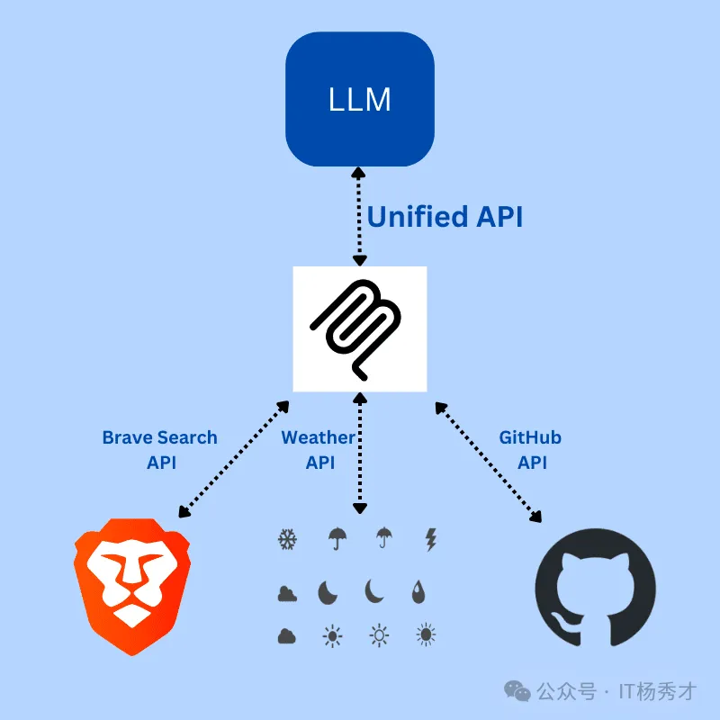
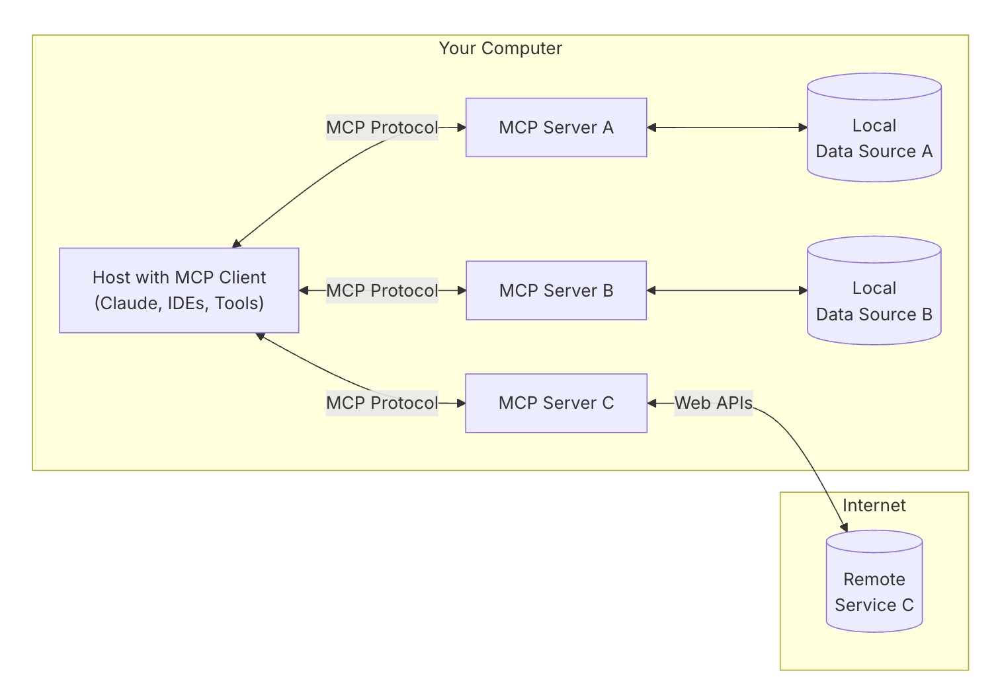
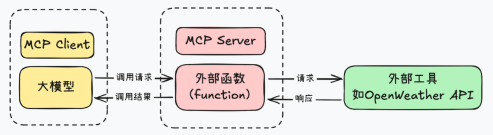

🤔 LLM 的典型局限
人工智能的迅速发展，尤其是大型语言模型(LLMs)，为生成类人类文本、解决复杂问题和跨行业提升生产力打开了前所未有的潜力。然而，一个持续存在的挑战是:这些模型往往与驱动现代工作流的实时动态数据隔离。在真正落地业务场景时，LLM 虽然已经具备很强的理解和生成能力，但仍然有几个明显短板：
- 知识覆盖有限：大多数 LLM 基于公开语料训练，对垂直领域知识掌握不足，遇到不熟悉的问题时容易出现“看起来很自信、实际上不准确”的回答。
- 知识缺乏实时性：模型的知识停留在训练阶段，无法天然知道“今天”的天气、最新政策或最新业务数据。
- 缺少主动执行能力：LLM 更像一个“规划者”，能够理解和推理，但如果没有外部工具配合，它本身无法主动读取文件、访问网络或执行系统操作。
🧰 传统方案：函数调用
Function Call 于 2023 年 由 OpenAI 推出。在此之前，LLM 主要只能通过自然语言回答问题，无法直接触发 API 调用或插件交互。Function Call 的关键能力在于：模型能够以结构化 JSON 的形式输出函数参数，再交由应用程序执行对应逻辑。

- 识别意图：模型根据用户输入判断是否需要调用函数。
- 生成参数：模型输出结构化 JSON，用于描述目标函数及其参数。
- 应用执行：业务程序接收参数后调用本地函数或外部接口。
- 结果回传：函数执行结果再返回给模型，由模型整理成自然语言回答。
虽然 Function Call 非常重要，但它也存在明显局限：
- 平台依赖性强：不同 LLM 平台对 Function Call 的实现差异较大。
- 迁移成本高：从一个模型平台切换到另一个平台时，通常需要重写适配逻辑。
- 生态不统一：工具描述、参数约定和交互方式都可能不一致，难以形成统一标准。
- 无状态：每次调用都是完全独立的，比如连数据库，每次调用都要重新传地址、账号、密码，重新建立连接，无法复用会话
- 单向通信：只能 LLM 主动调用工具，工具无法主动给 LLM 推送消息，比如实时监听日志异常、Kafka 消息，完全做不到
- 能力单一：只能实现 “单次调用 - 返回” 的简单场景，无法支撑复杂的、持久化的、多轮交互的业务。
🔌 MCP 是什么
MCP 全称是 Model Context Protocol（模型上下文协议），它由 Anthropic 在2024年11月推出，目标是为 LLM 与外部数据源、工具之间的交互提供一种更标准化的方式，旨在使AI模型，尤其是大型语言模型(LLMs)，能够更容易地与外部数据(如文件、数据库或API)连接。它就像一个通用插头，可以让AI"与”不同的系统交流，而不需要为每个系统进行定制设置。官方文档见：MCP Introduction。
官方对 MCP 的描述是：
MCP is an open protocol that standardizes how applications provide context to LLMs.
可以把 MCP 理解成 AI 应用的 USB-C 接口。就像 USB-C 让不同设备可以通过统一标准连接各种外设一样，MCP 也希望让不同模型、不同工具、不同数据源之间通过统一协议协作。模型上下文协议(MCP)，由Anthropic发起的一种开放标准，就是为了解决这个问题的。MCP承诺通过提供一个通用的、标准化的框架来无缝集成数据，重新定义AI与工具的交互方式。就像 TCP/IP标准化了网络通信或ODBC改变了数据库连接一样，MCP希望成为互联AI生态系统的基础。

从工程角度看，MCP 的价值在于：
- 统一连接方式：让模型以一致的方式接入工具、资源和上下文，而不是每个平台都单独定制一套接入协议。具体来说，MCP其实是解决了“MxN”集成问题，其中M个不同的LLM需要与N个不同的工具连接，导致自定义解决方案的组合爆炸。通过提供单一协议，MCP将这种复杂性降低到N+M。
- 增强模型能力：模型不仅能“思考”，还可以借助外部系统去读取文件、调用服务、获取实时数据。
- 提升系统可维护性：协议统一之后，组件之间的职责边界会更清晰，适配和维护成本也更低。
如果用一句话总结：MCP 不是替代 Function Call，而是在它之上进一步标准化模型与外部能力的协作方式。
🧩 MCP 相比 Function Call 带来了什么
MCP 的核心改进，可以从三个能力对象来理解：
- Tool：可供模型调用的外部工具。
- 服务器定义好工具，例如“发送邮件”“计算距离”“执行查询”等，客户端发现这些工具后，LLM 就可以在合适时机发起调用，结果再返回给模型继续推理。
- Resource：可供模型读取的数据资源。
- 这类资源可以是文件内容、数据库结果、API 响应等。客户端会把这些资源作为上下文提供给模型使用。
- Prompt：由服务器提供的提示词模板。
- 服务器可以预先定义 Prompt 模板，例如“生成产品描述”“排查报错”“总结会议纪要”等，客户端按模板填参后交给模型执行。
也就是说MCP提供了以下能力：
- 有状态的会话管理：支持长连接持久化，一次认证、长期复用，比如用 MCP 连接 MySQL，建立连接后，后续所有数据库操作都可以复用这个连接，不用每次都重新传参建连，就像后端的数据库连接池；
- 双向实时通信：不仅 LLM 可以主动调用工具，外部工具也可以主动向 LLM 推送数据，比如日志系统出现 ERROR 级日志、Prometheus 出现异常指标，都可以实时推送给 LLM，触发 LLM 的自动分析和处理；
- 标准化资源访问：定义了统一的资源模型，文件、数据库、消息队列、代码仓库、运维平台，都可以用标准化的方式对接 LLM，不用每个工具都单独写一套适配代码，就像后端的 ORM 框架，统一了不同数据库的访问方式；
- 上下文实时同步：可以自动同步外部系统的上下文变化给 LLM，比如 Git 仓库的代码变更、业务系统的配置更新，不用你每次都手动把内容粘贴给 LLM，LLM 能实时感知最新状态。
从这个角度看，MCP 不只是“让模型会调函数”，而是把 工具、资源、提示词模板 都纳入了统一的协议体系中。
🆚 MCP 和 Function Call 的区别
二者的核心区别就一句话：Function Call 是 LLM 的一项单轮工具调用能力，而 MCP 是一套标准化 LLM 与外部世界交互的完整通信协议——Function Call 只是 MCP 的能力子集，二者根本不是一个维度的东西。
- LLM 的基础工具调用能力：Function Call 的本质，是 LLM 提供的单轮、无状态、单向的工具调用机制，解决的核心问题是"让 LLM 不要瞎编答案，而是通过调用外部工具获取准确数据"。Function Call 就像 HTTP 接口的单次调用，你发一次请求、传一次参数、拿一次结果，无状态、单向通信，每次调用都要重新认证、重新传参，只能你主动调用接口，接口不能主动给你推消息。
- MCP 的完整协议设计：MCP 就是给二者建了一条稳定的、全双工的、持久化的通信管道。它不仅包含了 Function Call 的工具调用能力，还提供了 Function Call 完全不具备的核心能力。MCP 就像 TCP 长连接 + 完整的 RPC 协议，它不仅能实现单次调用，还能保持长连接、持久化会话状态、支持双向实时通信，有完整的资源管理、上下文同步、异常处理机制，能支撑复杂的、持久化的业务场景。
🏗️ 核心架构与运行方式
🗂️ 核心架构
MCP 采用 客户端 - 服务器架构，通信层通常使用 JSON-RPC 2.0 来交换消息。

架构中的关键角色如下：
- 主机（Host）：发起连接的 LLM 应用程序，主要是人工智能应用程序(例如，Claude桌面、集成开发环境或Agent 框架)，负责管理MCP
- 客户端（MCP Client）：Host内部专门用于与MCP Server建立和维持一对一连接的模块。它负责按照MCP协议的规范发送请求、接收响应和处理数据。简单来说，MCP Client是Host内部处理RPC通信的“代理”，专注于与一个MCP Server进行标准化的数据、工具或prompt的交换

- 服务器（MCP Server）：对接具体的数据源或工具，向客户端暴露能力。
- Resources：提供给 AI 的数据来源，如文件、数据库记录或 API 响应，为 AI 提供上下文信息。
- Tools：可被 LLM 调用的函数式能力，通常需要用户授权。
- Prompts：预定义的提示模板，帮助用户更高效地完成特定任务。指导 AI 响应或任务的模板消息或工作流，增强互动

- 资源来源：既可以是本地资源，也可以是远程资源。
- 本地资源：数据库、文件、服务等本机可访问对象。
- 远程资源：互联网上的 API、远端服务或其他在线能力。
📡 传输模式
MCP 常见有两种运行模式：
- Stdio 模式：通过标准输入输出流通信，是最常见的本地部署方案。实现简单，适合同机进程间交互，也避免了额外网络开销。
- SSE 模式：通过服务器发送事件（Server-Sent Events）通信，更适合远程部署场景，尤其是需要通过 HTTP 与多个客户端交互时。
🔄 MCP 的工作流程

一个典型的 MCP 请求大致会经过以下步骤：
- 初始化：主机启动并初始化 MCP Client，每个 Client 与一个 MCP Server 建立连接。
- 能力协商：Client 和 Server 先确认彼此支持的功能、资源和工具。例如，当天气 API 服务器被调用时，它可以回复可用的“工具”、“提示模板”和其他资源供客户端使用。一旦此交换完成，MCP Client会确认连接成功，并继续进行进一步的消息交换。我们可以把它类比为TCP通信建立握手的过程，在正式传输消息前，TCP有一个三次握手建立连接的过程。
- 请求处理：Client 根据用户请求或模型推理结果，决定是否向 Server 发起资源读取或工具调用。
- 模型决策：LLM 根据上下文和工具描述，判断是否需要调用工具，以及该调用哪些能力。
- 执行调用：MCP Server 负责真正执行工具逻辑，或读取本地 / 远程资源。
- 结果整合：调用结果返回给模型，由模型将新信息与原问题一起整合，形成最终答案。
- 响应返回：最终结果再由 Client 传回主机应用程序。
如果从 Agent 视角理解，MCP 的意义在于：模型不再只是“知道很多”，而是开始具备“按协议接入外部世界”的能力。
提示
MCP为什么需要设计一个功能交换的过程？
- 在传统的 API 服务中，如果你的 API Server最初需要两个参数（例如， location 和 date 用于天气服务），用户需要将他们的应用程序集成以发送带有这些确切参数的请求。但假设你想要添加第三个必需参数（比如 unit ，用于温度单位，如摄氏度或华氏度），那么API 的请求协议就会发生变化。这就意味着所有使用你 API Server的用户都必须更新其代码以包含新参数。如果不更新，他们的请求可能会失败、返回错误或提供不完整的结果 而MCP的这种设计就有效的避免了这种问题，MCP 引入了一种动态且灵活的方法，与传统的 API 形成了鲜明的对比。
- 当客户端（例如，AI 应用程序如 Claude Desktop）连接到 MCP 服务器（例如，你的天气服务）时，它会发送一个初始请求以了解服务器的功能。服务器会响应其可用工具、资源、提示和参数的详细信息。比如，如果你的天气 API 最初支持 location 和 date ，服务器会将其作为功能的一部分进行通信。同样，假设后来你添加了一个 unit 参数，MCP 服务器可以在下一次交换中动态更新其能力描述。客户端不需要硬编码或预先定义这些参数，它只需查询服务器当前的能力并相应地进行调整。这样，客户端就可以根据需要实时调整其行为，使用更新的能力（例如，在其请求中包含单位）而无需重写或重新部署代码
🔐 安全性设计
MCP 的安全设计主要体现在以下几个方面：
- 用户授权与控制：模型访问工具、资源和提示词时，通常需要经过用户同意。主机负责权限管理和交互确认，避免模型在用户不知情的情况下访问外部能力。
- 隔离与沙箱机制：具体的工具调用被封装在 MCP Server 中，模型不会直接接触底层敏感系统，从而降低误操作和越权访问的风险。
- 传输安全与来源验证：协议层支持对请求来源和通信过程进行校验，确保只有可信请求可以访问相应资源。
这也是 MCP 能够走向工程化的重要原因之一。它不是单纯强调“模型更强了”，而是强调 模型能力扩展必须建立在可控、可审计、可授权的前提下。
✅ 小结
模型上下文协议（MCP） 的核心意义，在于为 LLM、工具、数据源之间建立了一套更统一的连接规范，通过提供一个标准化的开源框架，MCP 简化了将 LLMs 连接到外部数据源、工具和工作流的过程，消除了复杂的一次性集成的需要。 随着 AI 的不断发展，无缝地与动态的现实世界数据进行交互的能力对于构建真正智能和响应的应用程序至关重要。MCP 为更互联的 AI 生态系统奠定了基础，使开发人员能够以最小的摩擦创建更智能、更强大的 AI 系统。随着越来越多的采用和持续的创新，MCP 有可能成为 AI 工具集成的行业标准，就像 TCP/IP 对网络通信所做的那样。
如果说 Function Call 解决的是“模型能不能调用函数”的问题，那么 MCP 进一步解决的是：
- 模型如何统一接入外部能力
- 不同工具和数据源如何被标准化暴露
- 整个调用链路如何在安全与可维护的前提下运行
对于 Agent 系统来说，MCP 很重要，因为它让模型从“只会生成内容”的角色，逐步走向“能够读取上下文、调用工具并完成任务”的执行型智能体。